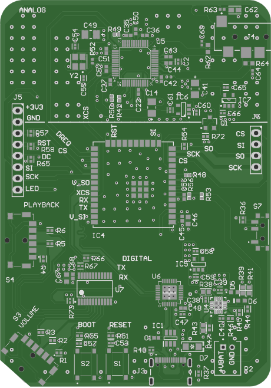
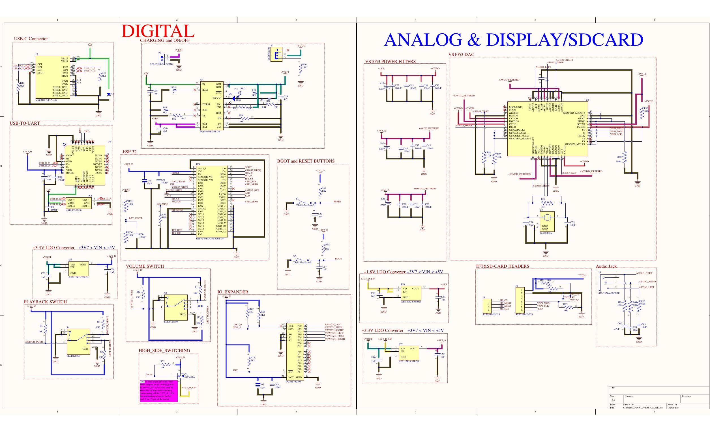

- Battery life
- ~17 hours
- PCB
- 4-layer, 60.7 × 86.9 mm
- Stackup
- SIG–GND–PWR–SIG
- Charging
- USB-C, BQ24074

Watch it play musicBoard, firmware and power
- Wrote ESP32 firmware in C++ that streams audio from the SD card over SPI to the decoder and reads the buttons over I²C on an interrupt line.
- Designed the power domains, with a firmware-gated P-MOSFET switch that powers down the analog rails in sleep.
- Traced brownout resets to a ~350 mV supply dip under load and redesigned the power path to fix it. The write-up.
- Split the supply into separate analog and digital LDOs to keep noise out of the audio path.
- Ran the ESP32 on a single core to stretch battery life.
- Hand-assembled the board with a soldering iron and hot-air station, and automated rail noise testing in Python with an Analog Discovery 2.
- Rev 2 is in design: a thinner build, lower-cost tactile switches and a move to an ESP32-S3 module.
